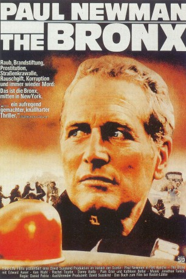
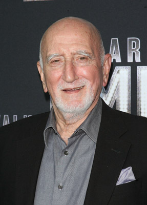
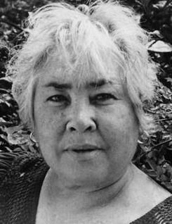
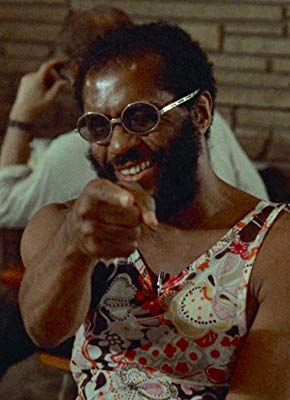

#3576 The Bronx
Alternativ: Fort Apache the Bronx
 
 IMDB-Wertung: 6.7 / 10
IMDB-Wertung: 6.7 / 10  Metascore: 0
Metascore: 0 
Zwei Polizisten werden getötet. Die Ermittlungen werden mit harten Methoden durchgeführt, dabei wird eine unschuldige Person von dem Polizisten Morgan vom Dach eines Gebäudes geworfen. Murphy, der das Geschehen beobachtete, bekommt das Schuldgefühl. Der direkten Frage seines Vorgesetzten weicht er aus, denkt jedoch daran, Morgan anzuzeigen. Sein Partner redet ihm das aus.
Jahr: 1981
Dauer: 125 Minuten
FSK: 16
Land: USA Studio: 20th Century FoxTonspuren:
Untertitel:
Auflösung: SD (928x720) Größe: 3010 MB
Genre: Drama, Krimi
Regisseur: Daniel Petrie
Drehbuch: Terence Rattigan
Soundtrack:
Darsteller:
 Paul Newman als Murphy
Paul Newman als Murphy Edward Asner als Connolly
Edward Asner als Connolly- Ken Wahl als Corelli
 Danny Aiello als Morgan
Danny Aiello als Morgan Rachel Ticotin als Isabella
Rachel Ticotin als Isabella Pam Grier als Charlotte
Pam Grier als Charlotte- Kathleen Beller als Theresa
 Jaime Tirelli als Jose
Jaime Tirelli als Jose- Clifford David als Dacey
 Randy Jurgensen als Cop at Bar
Randy Jurgensen als Cop at Bar Paul Gleason als Detective
Paul Gleason als Detective- Reynaldo Medina als Detective
 Daryl Edwards als Black Rookie
Daryl Edwards als Black Rookie- Donald Petrie als White Rookie
-  Dominic Chianese als Corelli's Father
- Kim Delgado als Suspect #1
-  Gloria Irizarry als Drug Dealer
 Frederick Strother als Hospital Buyer
Frederick Strother als Hospital Buyer Peter Gannon als Cop , uncredited
Peter Gannon als Cop , uncredited Bernie Rachelle als Wedgie Patrol , uncredited
Bernie Rachelle als Wedgie Patrol , uncredited- Angel Ramirez Jr. als Pregnant Girl's Brother , uncredited
- Tito Goya als Jumper / Detective
- Miguel Pinero als Hernando
- Lance Guecia als Track Star
- Rony Clanton als Pimp
- Sully Boyar als Dugan
 Michael Higgins als Heffernan
Michael Higgins als Heffernan- Rik Colitti als Pantuzzi
- Irving Metzman als Applebaum
- Frank Adu als Clendennon
- John Aquino als Finley
-  Norman Matlock als Lincoln
- John Ring als Donohue
- Tony DiBenedetto als Moran
- Terence Brady als Cop at Bar
- Marvin Cohen als Cop at Bar
- Thomas A. Carlin als Man with Flat Tire
- Frederick Allen als Corelli's Brother
- Mike Cicchetti als Wild-Eyed Man
- Apu Guecia als Stabbed Boy
- Reyno als Suspect #2
- Dadi Pinero als Suspect #3
- Cleavant Derricks als Suspect #4
- Dolores Hernández als Pregnant Girl
- Santos Morales als Girl's Father
- Ruth Last als Girl's Mother
- José Rabelo als Girl's Uncle
- Gilbert Lewis als Mob Leader
- Lisa Loomer als Hooker #1
- Sandi Franklin als Hooker #2
Datei: X:\1981\Bronx, The (1981, FSK16, 928x720).mkv seit 05.05.2016
Festplatte: HD 1980-1986
 Es gibt insgesamt 33 Filme in der Gruppe '1981'
Es gibt insgesamt 33 Filme in der Gruppe '1981'